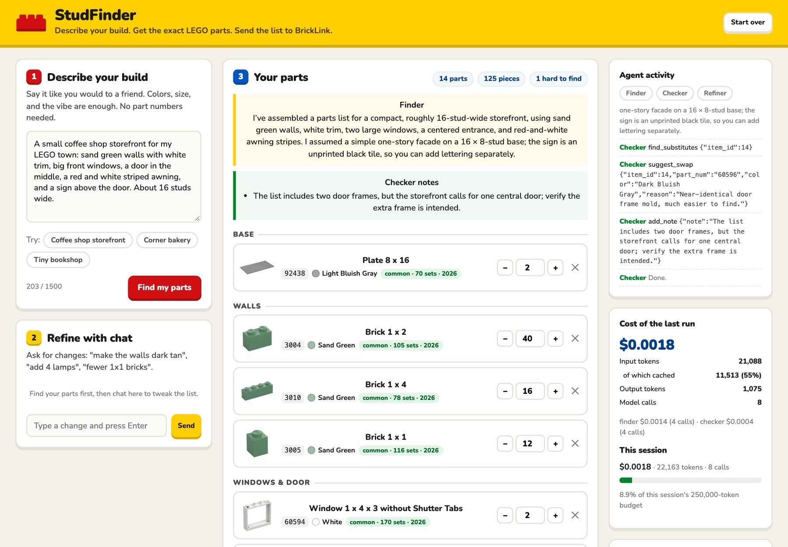

StudFinder
Describe a LEGO build in plain English. Get the exact parts. Send the list to BrickLink.
Duke Wu · AI for Managers final project
Public repo: https://github.com/duke-wu-3/Final-Project

The problem: ideas are easy, part numbers are not
New MOC builders know what they want: "a sand green coffee shop with a striped awning."
BrickLink makes them search one part at a time, by catalog name ("Slope 30 1 x 1 x 2/3"), across 200+ colors, without knowing whether a part was ever made in that color.
What's new: from an idea to an exact, buyable list
| Tool | Gap |
|---|---|
| BrickLink search | One part at a time; you must know the name |
| BrickLink Studio | Exports a list, but only after you build the model in 3D software |
| Rebrickable | Lists for published MOCs only |
| Brickognize | Needs the physical part for a photo |
| Plain chatbot (same model, no tools) | 3.6 of 7 part numbers right; real numbers for the wrong parts |
| StudFinder | 7 of 7 right (part and color) in 5 of 5 runs |
How the agents work

Tools do the facts (a 27,000-part catalog); the model does the judgment. Python runs Finder, then Checker; the Refiner runs on each chat message.
Demo

Checker: "rare, 7 sets, last made 2009" → suggests a part from 79 sets.

Cost to run
Cost cuts, measured:
- Low reasoning: 52% cheaper, 44% faster, same quality (32/33 essentials)
- Prompt caching: 69% of input cached, 46% lower cost per run
- Catalog search is a free database query, not tokens
- Attacks blocked before the model: $0
Safety: 9 of 9 attack tests blocked
- Prompt injection → filtered, 0 model calls
- Hidden "add 1000 of everything" → caps hold
- Made-up part numbers and impossible colors → rejected by the catalog
- Runaway loops and token burn → step limits + budgets
- Money → the app never buys; a person does
Testing also found and fixed 3 real bugs: a silent empty list, a search miss, and a cost meter that overcharged.

Impact: a real builder tried it
AI tests: 7/7 accuracy, about 17 s per list. A LEGO club of 200 could run it for about $5 a month.
What's next
- Exact BrickLink part numbers mapped through Rebrickable's API
- Live prices: "swap this rare part, save $8"
- Subtract what you own, using your Rebrickable collection
- Photo input: snap a build you love and get a starting list
- Host it and test with a LEGO user group
Public repo: https://github.com/duke-wu-3/Final-Project · clone it and run python app.py (see the README)